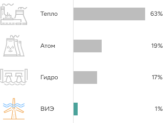
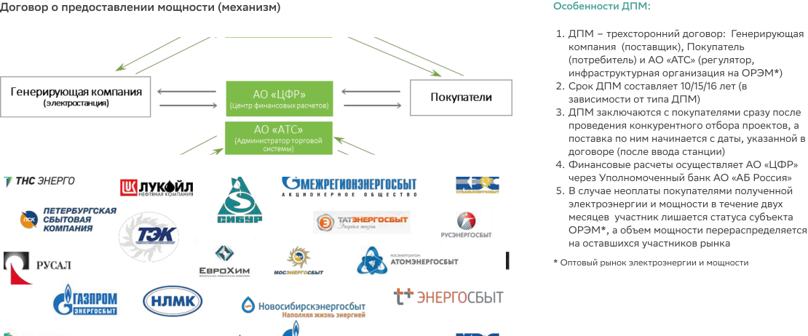
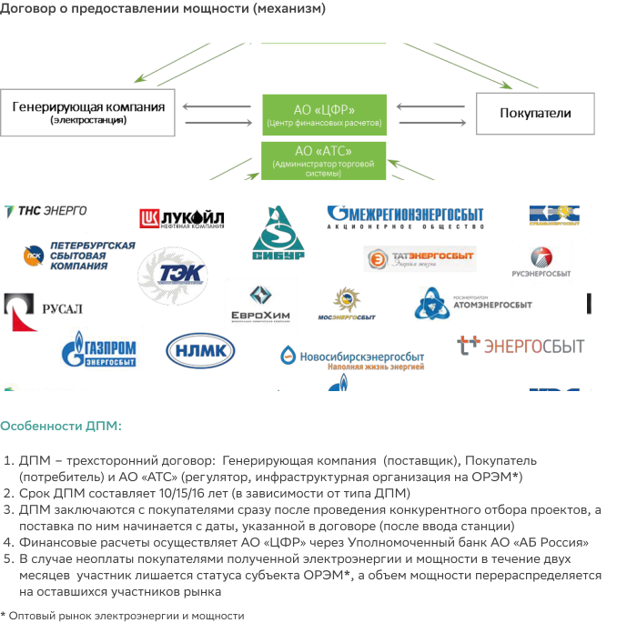
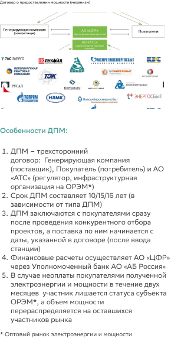
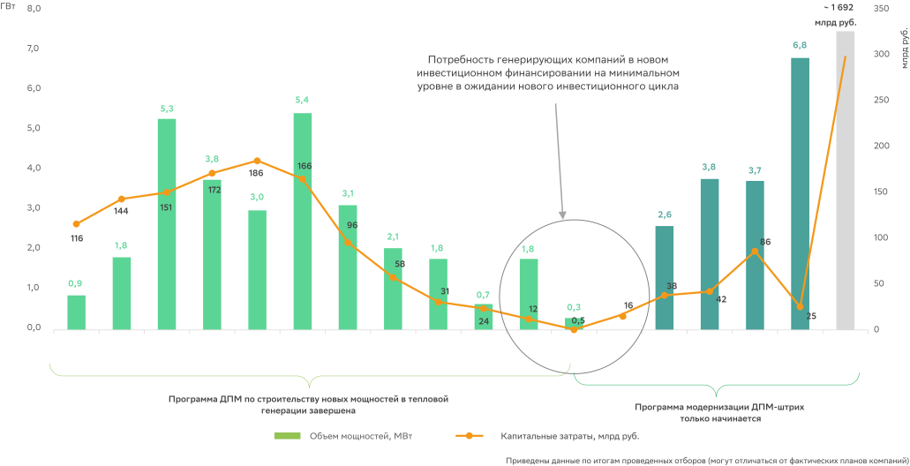
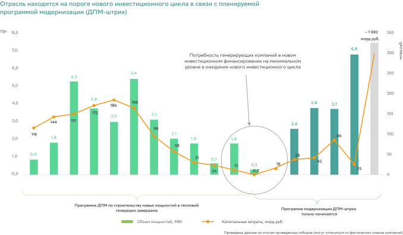
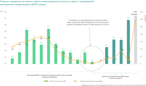
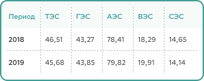
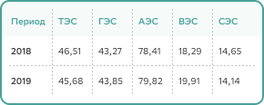

Одним из видов генерации является производство электроэнергии с использованием
возобновляемых источников или ВИЭ. Обычно под ВИЭ подразумевают энергию солнца, ветра, а также
биомасс. Гидроэлектростанции, использующие энергию воды, уже давно стали традиционным источником, а
вот масштабное использование солнца и ветра получило развитие сравнительно недавно.
Общая доля электроэнергии, которая вырабатывается в мире за счет ВИЭ, из года в год
растет. Ряд стран активно вводят новые мощности и развивают ВИЭ, двигаясь в сторону полного отказа
от использования невозобновляемых источников энергии. Несмотря на то, что доля солнца и ветра у нас
в стране составляет меньше 1% , данный вид генерации привлекает к себе все больше внимания.

Солнечные и ветряные станции не могут вырабатывать электроэнергию круглосуточно, к
тому же имеют высокую удельную стоимость строительства по сравнению с традиционной генерацией.
Именно поэтому их развитие во всем мире происходит благодаря поддержке со стороны государства.
Основным стимулом создания и использования возобновляемых источников энергии в России стал механизм
ДПМ ВИЭ.



ДПМ ВИЭ введен в 2013 г. Постановлением Правительства от 28.05.2013 №449. С начала
программы по 2018 г. ежегодно проводились конкурсные отборы проектов строительства электростанций.
Критерием отбора инвестиционных проектов стала наименьшая сумма удельных капитальных затрат. По
итогам проведенных конкурсов были отобраны объекты общей установленной мощностью 5,3 ГВт. В
программе до 2024 г. практически все квоты разыграны, рынок ДПМ ВИЭ находится на пике ввода
мощностей.
Отрасль находится на пороге нового инвестиционного цикла в связи с планируемой
программой
модернизации (ДПМ-штрих)



В 2019 г. Правительством РФ приняты принципиальные решения о продлении программы
поддержки ДПМ ВИЭ в РФ на период 2025–2035 гг. в сегменте оптового рынка. Основной целью программы
ДПМ ВИЭ 2.0 является повышение конкурентоспособности ВИЭ РФ на внутренних и внешних рынках.
Программа предусматривает ввод 10 ГВт новых мощностей (соотношение СЭС/ВЭС — 35%/65%), целевую норму
доходности в 12% и 15-летний период возврата вложенного капитала. Ключевым отличием от первой
программы ДПМ является ориентация на экспорт локализованного оборудования: потенциально 2,6 ГВт ВЭУ
и 2,1 ГВт ФЭМ.
С компанией, победившей в конкурсном отборе, заключается договор, механизм которого
аналогичен ДПМ в традиционной генерации. Предметом договора является поставка мощности в течение 15
лет. Объект ВИЭ получает гарантированную плату за мощность, позволяющую окупить инвестиции в
строительство. Базовая доходность проекта варьируется в зависимости от года его отбора и составляет
12 или 14%.
Основными параметрами ДПМ являются:
- вид источника энергии
- установленная мощность
- местоположение генерирующего объекта
Получая право на гарантированные денежные потоки в виде платы за мощность, инвестор
принимает на себя ряд обязательств, за нарушение которых предусмотрены штрафы, вплоть до расторжения
ДПМ. По условиям договора генерирующий объект должен пройти квалификацию и начать поставку мощности
к определенному сроку.
Построенная электростанция должна отвечать заявленным техническим параметрам, в
частности обеспечить достижение нормативного КИУМ. Кроме того, есть требование по степени
локализации, которое отличает ДПМ ВИЭ от ДПМ в тепловой генерации. То есть установлена обязательная
для выполнения доля отечественного оборудования и работ в общей стоимости станции.
С 2015 г. помимо оптового рынка действует и розничный рынок электроэнергии и
мощности, полученной от возобновляемых источников. В отличие от оптового рынка, на розничном рынке
поддерживается более широкий перечень технологий ВИЭ, в который, помимо СЭС, ВЭС и МГЭС, входят
объекты, генерирующие электроэнергию за счет биомассы, биогаза и свалочного газа, а установленная
мощность объектов ВИЭ на розничном рынке должна быть менее 25 МВт.
В целом, механизмы стимулирования развития ВИЭ на оптовом и розничном рынке похожи:
-
проекты выбираются по итогу конкурсных отборов;
-
объекты должны быть внесены в схему и программу перспективного
развития электроэнергетики региона;
-
объекты ВИЭ должны пройти квалификацию — подтверждение, что
электроэнергия производится с использованием ВИЭ-генерации;
-
должны быть соблюдены требования по локализации (применяются только
для ВЭС, СЭС и МГЭС) — пропорции товаров и услуг в структуре издержек по возведению объекта
ВИЭ, произведенных российскими компаниями;
-
срок возврата инвестиций — 15 лет.
Следует отметить, что механизм реализации электроэнергии и мощности зависит от
территориального расположения объекта ВИЭ. На территориях, которые относятся к так называемым
неценовым и ценовым зонам оптового рынка совокупный объем электроэнергии, вырабатываемый
предприятиями ВИЭ, не должен превышать 5% процентов объема потерь электроэнергии в сетях.
Ограничение вызвано тем, что сетевые организации обязаны приобретать по долгосрочной повышенной цене
электроэнергию от ВИЭ в целях компенсации потерь в сетях.
На изолированных территориях и районах, технологически не связанных с ЕЭС, не
существует такого ограничения — компания-генератор продает электрическую энергию и мощность
гарантирующему поставщику, для которого в первую очередь важно снижение стоимости покупаемой
электроэнергии. Поэтому, если это экономически выгодно, здесь хоть вся электроэнергия может быть
произведена ВИЭ-генераторами. Однако, на сегодняшний день экономически обоснованный тариф
(рассчитанный по реальным затратам) существенно выше тарифа для населения. Поэтому поддержка
энергосистем в изолированных районах осуществляется за счет компенсации недополученных доходов из
средств регионального бюджета: за счет субсидий региональным организациям по поставке электроэнергии
населению.
В августе 2020 г. Правительство РФ внесло важные корректировки в систему поддержки
ВИЭ-генерации на розничном рынке, в том числе была установлена обязанность сетевых организаций
заключить договоры купли-продажи электроэнергии в целях компенсации потерь с победителями отборов до
начала реализации инвестиционного проекта, что позволяет облегчить привлечение заемного
финансирования на реализацию проекта и что повышает инвестиционную привлекательность розничных ВИЭ
проектов.
Розничный рынок ВИЭ достаточно молодой и динамично развивающийся, поэтому
представляет интерес для Банка. Подходы к финансированию проектов розничного рынка должны быть
аналогичны подходам к проектам оптового рынка, но ввиду незначительных сумм каждого из таких
проектов в отдельности целесообразно рассматривать их пакетным предложением.
-
Постановление Правительства РФ от 28.05.2013 №449 «О механизме
стимулирования использования возобновляемых источников энергии на оптовом рынке
электрической энергии и мощности».
В постановлении перечислены основные условия программы ДПМ ВИЭ (для
СЭС, ВЭС и ГЭС малой мощности), в том числе требования по локализации, штрафы за ее
недостижение и формула расчета цены ДПМ.
-
Постановление Правительства РФ от 03.06.2008 №426 «О квалификации
генерирующего объекта, функционирующего на основе использования возобновляемых
источников энергии».
В постановлении описывается порядок и критерии квалификации объектов
ДПМ ВИЭ, в том числе порядок подтверждения уровня локализации.
-
Постановление Правительства РФ от 23.01.2015 №47 «О внесении изменений
в некоторые акты Правительства РФ по вопросам стимулирования использования
возобновляемых источников энергии на розничных рынках электрической энергии».
Постановление описывает механизм поддержки объектов ВИЭ на розничном
рынке.
-
Постановление Правительства РФ от 29.08.2020 №1298 «О вопросах
стимулирования использования возобновляемых источников энергии, внесении изменений в
некоторые акты Правительства РФ и о признании утратившими силу отдельных положений
некоторых актов Правительства РФ.»
Постановлением вносятся изменения в систему поддержки ВИЭ генерации на
розничном рынке.
Риски проектов ВИЭ связаны с факторами, которые могут повлиять на стабильность и
величину денежного потока по ДПМ.
1.
Риск увеличения сроков строительства
Одним из условий получения платы по ДПМ является обязательство инициатора
своевременно построить электростанцию и вывести ее на ОРЭМ. Увеличение сроков строительства
может повлечь невыполнение установленных сроков по началу поставки мощности, что влечет за собой
штрафы регулятора. Предельный размер штрафов составляет 25% от стоимости непоставленной или
недопоставленной мощности. Просрочка начала поставки мощности более двух лет грозит расторжением
договора ДПМ.
Как показывает практика, данный риск является высоким. По состоянию на 1
квартал 2020 г. было введено 68% мощностей от плана на соответствующий период или 25,7% от
общего плана вводов, часть ДПМ были расторгнуты. Общая сумма уплаченных штрафов за период
программы составила около 6 млрд рублей.
Для минимизации данного риска на инвестиционной фазе необходимо обеспечение.
Таковым может быть поручительство платежеспособной компании или гарантия генерального
подрядчика. В качестве обеспечения может также рассматриваться регресс на контракт с поставщиком
(или залог прав по контракту), в соответствии с которым поставщик несет финансовые обязательства
по проекту. Однако условия такого контракта требуют проведения тщательной юридической
экспертизы. Минимизации риска также способствует аккредитивная схема расчетов, где оплата
привязана к выполнению подрядчиком этапов по проекту.
Привлечение в проект технического консультанта позволяет контролировать
соблюдение сроков строительства, этапов проекта и соответствие проводимых работ изначальному
плану, однако не является панацеей.
2.
Риск недостижения планового КИУМ
Для получения полной платы за мощность по ДПМ объект ВИЭ должен выполнять
требования к коэффициенту использования установленной мощности (КИУМ). Данное требование
действует в течение всего срока эксплуатации станции.
Для солнечных проектов нормативный КИУМ должен быть не менее 10,5%, для
ветряных проектов — не менее 20,25%. Невыполнение данных нормативов приводит к применению
понижающих коэффициентов к плате за мощность, что означает сокращение денежного потока. В
таблице ниже представлен размер штрафа применяемого для солнечных и ветроэлектростанций.
Для минимизации риска недостижения целевого КИУМ необходимо изначально
подтвердить, что объект ВИЭ правильно расположен, то есть находится в регионе с природными
условиями, позволяющими достичь целевые показатели проекта. Важной информацией в этом смысле
являются данные измерений — уровня инсоляции или ветропотенциала — на площадке соответствующего
объекта. Ответственность за проведение таких измерений может быть возложена как на самого
клиента, так и на технического консультанта.
Важнейшей задачей технического консультанта является подтверждение основных
характеристик оборудования и целевых показателей объекта ВИЭ, используемых в финансовой модели,
и их соответствия требованиям по ДПМ. Вышеописанная работа по верификации технических параметров
проекта в обязательном порядке проводится до предоставления заемного финансирования, однако не
снимает риск недостижения КИУМ в последующие годы работы станции.
Инструментами, позволяющими минимизировать риск снижения КИУМ, также
могут быть:
- включение обязательства инициатора или поставщика оборудования компенсировать недополученную
выручку по ДПМ;
- оформление страховки от перерывов в производстве (business interruption);
- формирование резервных счетов, на которых в рамках проекта будут аккумулироваться денежные
средства. В случае падения выручки данные резервы могут быть использованы для платежей по
кредиту.
3.
Риск недостижения требуемых параметров локализации
Одним из основных факторов, влияющих на размер платежей по ДПМ ВИЭ, является
степень локализации оборудования. Для солнечных станций она должна составлять не менее 70%, для
ветряных — не менее 65%. В случае несоблюдения степени локализации к размеру платы за мощность
применяются понижающие коэффициенты. Это приводит к существенному снижению денежных потоков по
ДПМ, что очень чувствительно для проекта. Понижающие коэффициенты: СЭС — 0,35, ВЭС — 0,45.
При проведении анализа необходимо удостовериться в возможности достижения
требуемой степени локализации, в частности подтвердить необходимый объем поставок оборудования
(солнечных панелей или ветряных установок) с соответствующими характеристиками.
Данный риск может быть снижен путем оформления поручительства платежеспособной
компании или путем переложения ответственности по проекту на поставщика оборудования и/или
подрядчика.
4.
Технологический риск или риск оборудования
Кредиты на финансирование проектов ВИЭ имеют долгий срок, в среднем 15 лет. Для
того, чтобы станция могла генерировать денежные потоки, достаточные для обслуживания и погашения
кредита, оборудование на протяжении всего срока должно быть пригодно к эксплуатации и сохранять
свои технические характеристики. Отчасти это перекликается с необходимостью выполнения
показателя КИУМ, однако данный риск необходимо рассмотреть шире.
Например, для солнечной станции важной характеристикой оборудования является
коэффициент деградации фотоэлектрического модуля, который говорит о скорости снижения КПД за
время эксплуатации. Для ветряной станции — это кривая мощности и другие характеристики
ветроустановок.
Обязательное требование банка для минимизации данного риска — оформление
гарантии производителя на оборудование. Срок гарантии должен покрывать срок испрашиваемого
кредита, а прочие условия удовлетворять кредитора.
Многие компании — производители оборудования для ВИЭ (зачастую это дочерние
компании иностранных производителей) созданы недавно и не имеют устоявшейся репутации для того,
чтобы давать долгосрочные гарантии качества своей продукции. В этом случае Банку следует
запрашивать предоставление гарантии материнской компании. В иных случаях существует возможность
застраховать ответственность производителя. Срок страховки должен составлять не менее 1 года с
условием обязательного продления.
5.
Технологический риск или риск оборудования
Определяющим критерием отбора проектов ВИЭ является сумма удельных капитальных
затрат, которая в дальнейшем отражается в расчете платы за мощность. Иными словами, по условиям
ДПМ окупаемость обеспечивается только на сумму инвестиций, не превышающую заявленный CAPEX.
Увеличение стоимости проекта в расчет окупаемости не включается и таким образом ухудшает
экономику проекта.
Одним из факторов удорожания проекта ВИЭ может стать рост валютных курсов.
Несмотря на локализацию, значительная часть затрат по таким проектам часто привязана к валюте.
Например, когда поставку оборудования обеспечивает дочерняя компания иностранного производителя.
Механизм ДПМ предусматривает только частичное покрытие расходов, связанных с ростом курсов. В
связи с этим управление валютным риском приобретает важное значение.
Для минимизации данного риска рекомендуется предусмотреть обязательство
инициатора профинансировать удорожание проекта либо включить в структуру сделки финансовые
инструменты, которые прямо хеджируют валютные риски. Также необходимо включить требование Банка
по предоставлению отчета технического консультанта, содержащего оценку правильности и
достаточности суммы заложенных капитальных затрат.
Анализ и финансовое моделирование
Общие рекомендации
Принципы моделирования проектов ДПМ ВИЭ соответствуют общепринятым стандартам
построения моделей для проектного финансирования. Методы прогнозирования и анализа доходов и
расходов аналогичны методам, применяемым при построении моделей в Традиционной Генерации.
Существенным отличием финансовых моделей ВИЭ электростанций от Традиционной Генерации является
отсутствие топливных издержек. Операционные издержки должны содержать затраты на сервисное
обслуживание станций. Доходная часть практически полностью (в среднем до 80%) зависит от цены ДПМ,
подтверждение расчета которой необходимо запрашивать у клиента.
По проектам ДПМ ВИЭ также могут предоставляться налоговые льготы на муниципальном
уровне, что также может быть учтено в модели. Аналогично всем проектам, финансируемым в рамках
проектного финансирования, особое внимание необходимо уделять стресс-тестированию моделей на предмет
существенного ухудшения изначальных финансовых предпосылок: увеличению стоимости проекта, сдвигу
сроков строительства (и соответственно возникновению штрафов), уменьшению платы за мощность в
результате недостижения целевых параметров КИУМ и т.п.
Помимо стандартного пакета документов при рассмотрении сделок
финансирования проектов ВИЭ необходимо запрашивать следующую информацию:
-
результаты ветроизмерений / уровня инсоляции за 12 месяцев;
-
спецификация оборудования, подтверждающая КИУМ при заданных
результатах измерений;
-
гарантия поставщика/подрядчика по достижению минимального уровня
локализации;
-
договор о техническом присоединении;
-
перечень заключенных ДПМ;
-
расчет цены ДПМ;
-
сервисные контракты по обслуживанию;
-
подтверждение налоговых льгот (на муниципальном уровне).
Структурирование кредитных сделок
Основной запрос, поступающий от клиентов, — это кредитование строительства объектов
ВИЭ на принципах проектного финансирования, а также рефинансирование ранее понесенных затрат по уже
работающим станциям.
Важным условием при структурировании сделки является наличие ДПМ на балансе
заемщика (проектной компании). Это позволяет достичь экономической и юридической обособленности
проекта. Следует отметить, что все имущество проекта, а именно доли в капитале проектной компании,
права по ДПМ и имущественный комплекс станции обязательно берется в залог по кредиту, однако данное
обеспечение не может рассматриваться в качестве инструмента снижения рисков инвестиционной фазы.
Срок кредитования может составлять до 15 лет и выше, но не более срока действия
ДПМ.
Погашение единовременным платежом в данных проектах не допускается, т.к. источники
для этого отсутствуют. Условиями кредита предусматривается график с регулярными платежами в
соответствии с финансовой моделью. Желательно, чтобы после окончания срока кредитования оставался
временной запас до завершения ДПМ.
Важным аспектом финансирования проектов ВИЭ является собственное участие
инициаторов — как правило, банк требует не менее 20% бюджета. Также, в связи с риском
несвоевременной поставки мощности, структура сделки должна предусматривать обязанность инициатора
проекта компенсировать уплату штрафов за счет собственных средств.
При структурировании сделок ВИЭ также необходимо включать основные условия и
ковенанты, используемые в практике проектного финансирования.
В обязательном порядке применяется коэффициент покрытия долга DSCR, который должен
быть не менее 1,1, т.к. в этом случае создается необходимый запас ликвидности. Однако слишком
высокое значение данного показателя (1,4 и выше) также нежелательно. Высокий DSCR приводит к
излишнему накоплению средств на счетах (клиент будет запрашивать разрешение выплаты дивидендов) и
удлинению срока погашения кредита, что для проектов ВИЭ с ограниченным периодом повышенной платы за
мощность несет дополнительные риски.
Необходимо предусматривать обязательство заемщика по переводу в банк оборотов. Это
не только источник погашения, что в данном случае главное, но и дополнительный доход. Также
необходимо контролировать долговую нагрузку и возможность вывода средств из бизнеса. Отдельно
следует обратить внимание на НДС, средства от возмещения которого должны направляться либо на
финансирование проекта, либо на погашение задолженности по кредиту.
В каждом конкретном случае ковенантный пакет должен учитывать особенности
финансируемого проекта.
Также стоит обратить внимание на то, что на российском рынке ВИЭ, ввиду его
молодости, еще не вполне сформировалась практика категорирования ветроустановок по видам имущества.
Общая тенденция — относить ветроустановки к движимому имуществу, однако это влечет определенные
юридические риски в части действительности залога, которые можно минимизировать, оформив в ипотеку
земельные участки под объектами строительства (будущими ветроустановками) и добавив обязательство
залогодателя по оформлению в залог недвижимого имущества в случае переквалификации объекта.
Типовые условия предоставления финансирования:
-
Цели: проектное финансирование.
-
Продукты: НКЛ.
-
Сроки: до 15 лет и/или не более даты окончания ДПМ.
-
Ставки: плавающая ставка, так как доходная часть (ДПМ) привязана к ОФЗ.
Стандартной
практикой является включение условия о ступенчатом снижении ставки при успешном:
1) вводе станции в коммерческую эксплуатацию;
2) достижении приемлемого уровня долговой нагрузки (Долг/EBITDA ≤
3.5x).
-
Валюта: рубли РФ.
-
Обеспечение:
-
залог долей Заемщика;
-
залог прав по EPC контракту и/или контракту на поставку оборудования;
-
залог прав по сервисным контрактам;
-
залог земельных участков под строительство;
-
залог счета поступления НДС;
-
иное в случае низкой платежеспособности подрядчика / инициатора проекта и/или
отсутствия опыта реализации аналогичных проектов у инициатора (например,
поручительство платежеспособной компании, спонсорское соглашение с
платежеспособной компанией и пр.).
-
залог долей Заемщика;
-
залог имущества электростанции.
-
Ковенанты:
-
отчуждение и/или расторжение ДПМ;
-
изменение и/или расторжение гарантии на оборудование;
-
выплату дивидендов сверх суммы свободного денежного потока, уменьшенного на
суммы погашений;
-
использование возвращаемого НДС на цели кроме финансирования проекта и/или
погашения долга.
-
Контроль соотношения Долг/EBITDA на эксплуатационной фазе;
- обязательство по проведению не менее 90% выручки по счетам у кредитора (включая
перевод из уполномоченного банка ОРЭМ).
Финансирование проектов ДПМ ВИЭ является одним из самых перспективных и
востребованных направлений кредитования в отрасли. Согласно отраслевой кредитной стратегии по
отрасли «Энергетика», ДПМ проекты в солнечной и ветроэнергетике являются ключевыми точками роста
кредитного портфеля Банка в электроэнергетике. Однако высокая доходность по сделкам, стабильный
денежный поток проектов (благодаря механизму ДПМ ВИЭ) и соответствие таких проектов экологической
повестке вызывает острую конкуренцию за право финансировать ДПМ-проекты среди банков, что в свою
очередь приводит к снижению процентных ставок по кредитам и к ослаблению требований кредиторов к
структуре сделки. Например, чтобы дать конкурентоспособное предложение, Банк может согласиться на
отсутствие регресса на инвестиционной фазе, снижение собственного участия или сокращение перечня
обеспечения.

 
